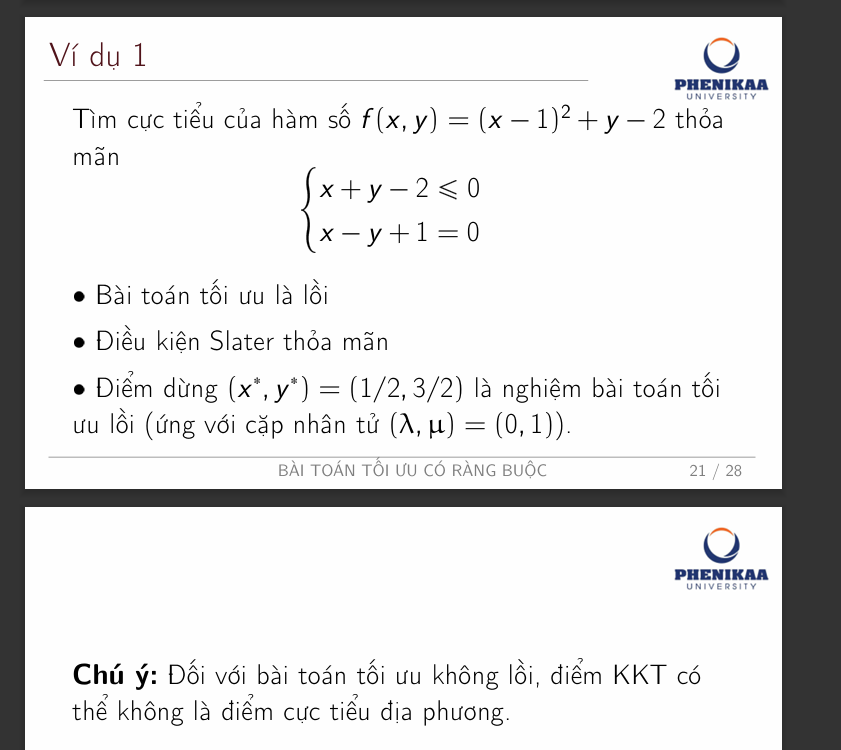
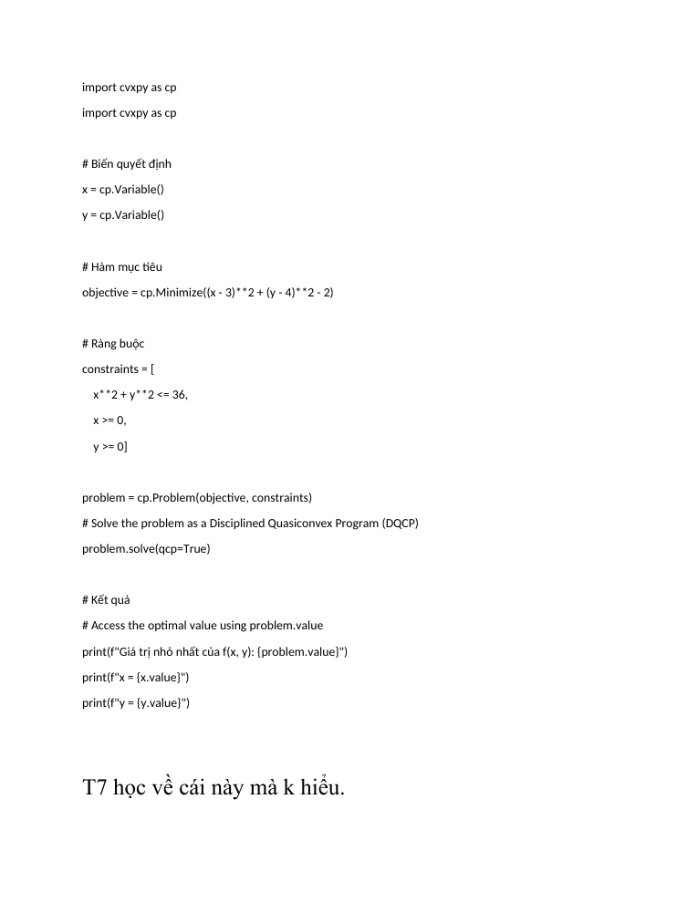
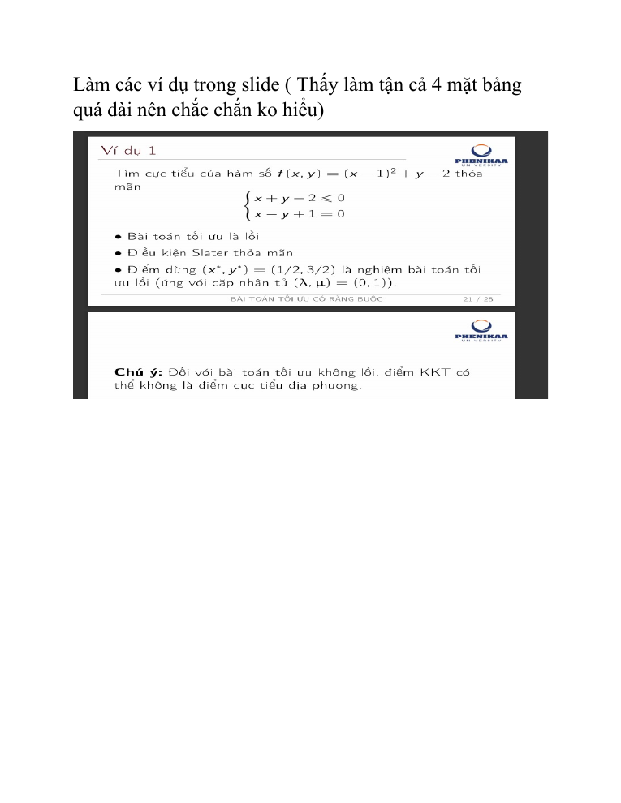

THỰC HÀNH CODE
Giải bài tối ưu bằng code: Python, cvxpy, scipy
Thay cho việc làm tay cả bảng dài, ta dùng code để kiểm tra và tự động hóa các bước: tính gradient/Hessian, liệt kê điểm KKT, giải QP, chạy active set. Trang này có: bài mẫu từ file của bạn, ví dụ slide giải bằng code (có kết quả thật), 7 bài tập chấm tự động ngay trong trình duyệt, và 4 bài tập cvxpy chấm bằng pytest/Colab.
Chạy code ở đâu? (GitHub có “biên dịch” được không?)
GitHub Pages chỉ phục vụ file tĩnh: không có máy chủ để biên dịch hay chạy Python. Vì vậy mỗi loại bài dùng công cụ phù hợp:
| Loại | Công cụ chạy | Thư viện | Chấm tự động | Giới hạn thật |
|---|---|---|---|---|
| Bài tập hàm trên trang (7 bài) | Pyodide (Python/WebAssembly) trong Web Worker | numpy, sympy | có: ĐÚNG / SAI KẾT QUẢ / LỖI CHẠY / QUÁ GIỜ | tải ~10–25 MB lần đầu từ CDN; không có cvxpy |
| Bài tập cvxpy (4 bài) | Google Colab (mở notebook trong repo) hoặc máy bạn | cvxpy, scipy, numpy | có: ô “Chấm bài” hoặc pytest | cần tài khoản Google hoặc cài Python |
| Ví dụ slide (3 script) | máy bạn: python3 file.py | cvxpy, sympy, scipy | in kết quả để đối chiếu | cần cài thư viện |
| Kiểm tra mỗi lần push | GitHub Actions (.github/workflows/nlp-verify.yml) | cvxpy, pytest… | có: pytest trên lời giải mẫu | chỉ kiểm tra, không chạy trên trang |
cvxpy cần các thư viện C/C++ đã biên dịch (không có bản “thuần Python” cho Pyodide). Với numpy/sympy (và scipy) thì chạy được. Muốn dùng cvxpy mà không cài gì, bấm nút Colab bên dưới.
Bài mẫu trong file tam thoi la vay.docx
File của bạn gồm một đoạn code cvxpy và ảnh slide “Ví dụ 1” (KKT), kèm ghi chú: “T7 học về cái này mà k hiểu. Làm các ví dụ trong slide (thấy làm tận cả 4 mặt bảng quá dài nên chắc chắn ko hiểu)”. Nội dung đã được chuyển sang Markdown và ảnh: tam_thoi_la_vay.md.
Code gốc trong file
import cvxpy as cp
import cvxpy as cp
# Biến quyết định
x = cp.Variable()
y = cp.Variable()
# Hàm mục tiêu
objective = cp.Minimize((x - 3)**2 + (y - 4)**2 - 2)
# Ràng buộc
constraints = [
x**2 + y**2 <= 36,
x >= 0,
y >= 0]
problem = cp.Problem(objective, constraints)
# Solve the problem as a Disciplined Quasiconvex Program (DQCP)
problem.solve(qcp=True)
# Kết quả
# Access the optimal value using problem.value
print(f"Giá trị nhỏ nhất của f(x, y): {problem.value}")
print(f"x = {x.value}")
print(f"y = {y.value}")Ảnh trong file (slide tr.21)

Đọc hiểu đoạn code (từng dòng) và các chỗ nên sửa
x = cp.Variable(),y = cp.Variable(): khai báo hai biến quyết định (số thực).cp.Minimize((x-3)**2 + (y-4)**2 - 2): hàm mục tiêu — tổng hai bình phương nên lồi (Hessian \(2I\succ0\), Module 1).x**2 + y**2 <= 36,x >= 0,y >= 0: miền chấp nhận được = hình tròn bán kính 6 ∩ góc phần tư thứ nhất — lồi.problem.solve(): cvxpy kiểm tra quy tắc DCP rồi gọi bộ giải; kết quả nằm ởproblem.value,x.value,y.value.- Sửa 1:
import cvxpy as cpbị lặp hai lần — xóa một dòng. Sửa 2:solve(qcp=True)dành cho bài toán tựa lồi (DQCP); bài này là lồi thường nên chỉ cầnsolve(). Sửa 3: in thêmproblem.is_dcp()và nhân tửconstraint.dual_valueđể liên hệ với KKT.
Kết quả chạy thật và kiểm tra bằng tay chỉ 3 dòng
is_dcp (bài toán lồi theo quy tắc DCP): True Giá trị nhỏ nhất của f(x, y): -2.0 x = 3.0 y = 4.0 nhân tử của x^2+y^2<=36 : 0.000000 nhân tử của x>=0 : 0.000000 nhân tử của y>=0 : 0.000000
(1) Cực tiểu không ràng buộc của \((x-3)^2+(y-4)^2-2\) là \((3,4)\), giá trị \(-2\). (2) \((3,4)\) có \(x^2+y^2=25\le36\) và \(x,y\gt 0\): thỏa mọi ràng buộc, không ràng buộc nào chặt. (3) Ràng buộc lỏng ⇒ mọi nhân tử bằng 0 (điều kiện bù) ⇒ đó là nghiệm bài toán có ràng buộc. Đây là lối tắt chung: thử nghiệm không ràng buộc trước; nếu khả thi thì xong.
Ảnh render hai trang của file Word


Ví dụ của slide giải bằng code
Ba script dưới đây giải lại các ví dụ ở Module 2 và 3. Kết quả (đã chạy thật) khớp phần kiểm chứng của site, kể cả những chỗ slide chưa khớp.
KKT: Ví dụ 1–4 của slide 2 (cvxpy + sympy)
cvxpy giải bài lồi và trả nhân tử (dual_value); hàm kkt_enumerate liệt kê mọi điểm KKT của bài không lồi bằng cách chia trường hợp ràng buộc chặt/lỏng.
Mã nguồn (tải 02_kkt_vi_du_slide2.py)
"""02 — Các ví dụ KKT của Slide 2 (tr.55-61) giải bằng code, thay cho việc làm tay nhiều bảng.
Hai công cụ:
(a) cvxpy : bài toán LỒI -> cho nghiệm và nhân tử (dual_value) trực tiếp.
(b) sympy : liệt kê MỌI trường hợp 'ràng buộc chặt / lỏng' của hệ KKT (dùng cho bài không lồi).
Chạy: python3 02_kkt_vi_du_slide2.py Cần: pip install cvxpy sympy numpy scipy
"""
import itertools
import cvxpy as cp
import sympy as sp
print("=" * 70)
print("VÍ DỤ 1 (slide tr.55): min (x-1)^2 + y - 2 s.t. x+y-2<=0, x-y+1=0 (bài toán lồi)")
x, y = cp.Variable(), cp.Variable()
g = x + y - 2 <= 0
h = x - y + 1 == 0
p = cp.Problem(cp.Minimize((x - 1) ** 2 + y - 2), [g, h])
p.solve()
print(f" nghiệm (x*, y*) = ({x.value:.4f}, {y.value:.4f}), f* = {p.value:.4f}")
print(f" nhân tử (lambda, mu) = ({g.dual_value:.4f}, {h.dual_value:.4f}) <- khớp slide (0, 1)")
def kkt_enumerate(f, ineq, eq, vars_):
"""Liệt kê điểm KKT của min f s.t. ineq_i <= 0, eq_j = 0 bằng cách chia trường hợp theo ràng buộc chặt.
Trả về danh sách (điểm, nhân tử, hợp lệ?). hợp lệ = khả thi và lambda >= 0."""
lam = sp.symbols(f"l1:{len(ineq) + 1}", real=True)
mu = sp.symbols(f"m1:{len(eq) + 1}", real=True)
L = f + sum(l * g_ for l, g_ in zip(lam, ineq)) + sum(m * h_ for m, h_ in zip(mu, eq))
out = []
for active in itertools.product([False, True], repeat=len(ineq)):
eqs = [sp.diff(L, v) for v in vars_] + list(eq)
for a, l, g_ in zip(active, lam, ineq):
eqs.append(g_ if a else l) # chặt: g_i = 0; lỏng: lambda_i = 0 (điều kiện bù)
for sol in sp.solve(eqs, list(vars_) + list(lam) + list(mu), dict=True):
if not all(v.is_real for v in sol.values()):
continue
pt = {v: sol[v] for v in vars_}
feasible = all(g_.subs(sol) <= 1e-9 for g_ in ineq)
sign_ok = all(sol[l] >= -1e-9 for l in lam)
out.append((pt, {str(l): sol[l] for l in lam}, feasible and sign_ok))
return out
print("=" * 70)
print("VÍ DỤ 3 (slide tr.60): min x*y s.t. x^2 + y^2 <= 2 (KHÔNG lồi -> dùng liệt kê KKT)")
X, Y = sp.symbols("x y", real=True)
for pt, lam, ok in kkt_enumerate(X * Y, [X ** 2 + Y ** 2 - 2], [], (X, Y)):
print(f" điểm {pt}, nhân tử {lam}, f = {pt[X] * pt[Y]}, "
f"{'HỢP LỆ (KKT)' if ok else 'loại (lambda<0 hoặc không khả thi)'}")
print(" => so sánh f: (1,-1) và (-1,1) cho f = -1 (cực tiểu); (0,0) có f = 0 là điểm yên ngựa.")
print("=" * 70)
print("VÍ DỤ 2 (slide tr.57): min -(x^2+y^2+4x-6y) s.t. x+y-3<=0, -2x+y-2<=0")
F = -(X ** 2 + Y ** 2 + 4 * X - 6 * Y)
res = kkt_enumerate(F, [X + Y - 3, -2 * X + Y - 2], [], (X, Y))
for pt, lam, ok in res:
print(f" điểm {pt}, nhân tử {lam}, {'HỢP LỆ' if ok else 'loại'}")
print(f" => số điểm KKT hợp lệ: {sum(1 for r in res if r[2])} (điểm (1/3, 8/3) của slide có lambda_2 < 0)")
print("=" * 70)
print("VÍ DỤ 4 (slide tr.61): min 2x+y s.t. 3x+y<=6, x+y<=4, x>=0, y>=0 (LP)")
x, y = cp.Variable(), cp.Variable()
cons = [3 * x + y <= 6, x + y <= 4, x >= 0, y >= 0]
p = cp.Problem(cp.Minimize(2 * x + y), cons)
p.solve()
print(f" min: ({x.value:.4f}, {y.value:.4f}), f* = {p.value:.4f}, nhân tử = {[round(abs(float(c.dual_value)), 4) for c in cons]}")
p = cp.Problem(cp.Maximize(2 * x + y), cons)
p.solve()
print(f" max: ({x.value:.4f}, {y.value:.4f}), f* = {p.value:.4f}")
Kết quả chạy thật
======================================================================
VÍ DỤ 1 (slide tr.55): min (x-1)^2 + y - 2 s.t. x+y-2<=0, x-y+1=0 (bài toán lồi)
nghiệm (x*, y*) = (0.5000, 1.5000), f* = -0.2500
nhân tử (lambda, mu) = (0.0000, 1.0000) <- khớp slide (0, 1)
======================================================================
VÍ DỤ 3 (slide tr.60): min x*y s.t. x^2 + y^2 <= 2 (KHÔNG lồi -> dùng liệt kê KKT)
điểm {x: 0, y: 0}, nhân tử {'l1': 0}, f = 0, HỢP LỆ (KKT)
điểm {x: -1, y: -1}, nhân tử {'l1': -1/2}, f = 1, loại (lambda<0 hoặc không khả thi)
điểm {x: 1, y: 1}, nhân tử {'l1': -1/2}, f = 1, loại (lambda<0 hoặc không khả thi)
điểm {x: -1, y: 1}, nhân tử {'l1': 1/2}, f = -1, HỢP LỆ (KKT)
điểm {x: 1, y: -1}, nhân tử {'l1': 1/2}, f = -1, HỢP LỆ (KKT)
=> so sánh f: (1,-1) và (-1,1) cho f = -1 (cực tiểu); (0,0) có f = 0 là điểm yên ngựa.
======================================================================
VÍ DỤ 2 (slide tr.57): min -(x^2+y^2+4x-6y) s.t. x+y-3<=0, -2x+y-2<=0
điểm {x: -2, y: 3}, nhân tử {'l1': 0, 'l2': 0}, loại
điểm {x: 0, y: 2}, nhân tử {'l1': 0, 'l2': -2}, loại
điểm {x: -1, y: 4}, nhân tử {'l1': 2, 'l2': 0}, loại
điểm {x: 1/3, y: 8/3}, nhân tử {'l1': 10/9, 'l2': -16/9}, loại
=> số điểm KKT hợp lệ: 0 (điểm (1/3, 8/3) của slide có lambda_2 < 0)
======================================================================
VÍ DỤ 4 (slide tr.61): min 2x+y s.t. 3x+y<=6, x+y<=4, x>=0, y>=0 (LP)
min: (0.0000, 0.0000), f* = 0.0000, nhân tử = [0.0, 0.0, 2.0, 1.0]
max: (1.0000, 3.0000), f* = 5.0000
QP: null space và active set của slide 3 (numpy)
viết lại hai thuật toán của slide: hệ KKT đối xứng và vòng lặp tập hoạt động, in từng vòng.
Mã nguồn (tải 03_qp_vi_du_slide3.py)
"""03 — Ví dụ Slide 3: null space (tr.56-58) và active set (tr.69-79, 81), viết lại bằng numpy.
Chạy: python3 03_qp_vi_du_slide3.py Cần: pip install numpy scipy
"""
import numpy as np
from scipy.optimize import minimize
def null_space_qp(Q, c, A, b, xbar):
"""Giải min 1/2 x'Qx + c'x s.t. Ax = b qua hệ KKT đối xứng (4.2): [Q A'; A 0][d; mu] = [-g; b - A xbar]."""
m, n = A.shape
g = Q @ xbar + c
K = np.block([[Q, A.T], [A, np.zeros((m, m))]])
sol = np.linalg.solve(K, np.concatenate([-g, b - A @ xbar]))
return xbar + sol[:n], sol[n:]
def active_set(Q, c, A, b, x0, W0):
"""Active set cho min 1/2 x'Qx + c'x s.t. A x <= b (Q đối xứng xác định dương). Chỉ số ràng buộc tính từ 1."""
x = np.array(x0, float)
W = [i - 1 for i in W0]
for k in range(50):
g = Q @ x + c
if W: # bài toán con: min 1/2 d'Qd + g'd s.t. a_i'd = 0, i in W
Aw = A[W]
K = np.block([[Q, Aw.T], [Aw, np.zeros((len(W), len(W)))]])
sol = np.linalg.solve(K, np.concatenate([-g, np.zeros(len(W))]))
d, mu = sol[:len(x)], sol[len(x):]
else:
d, mu = np.linalg.solve(Q, -g), np.array([])
print(f" k={k}: x={np.round(x, 4)}, W={[i + 1 for i in W]}, g={np.round(g, 4)}, d={np.round(d, 4)}", end="")
if np.linalg.norm(d) < 1e-9: # d = 0: xét nhân tử Lagrange
print(f", mu={dict(zip([i + 1 for i in W], np.round(mu, 4)))}")
if len(W) == 0 or mu.min() >= -1e-9:
print(" => DỪNG: mọi nhân tử >= 0.")
return x
j = int(np.argmin(mu))
print(f" loại ràng buộc {W[j] + 1} (nhân tử âm nhất {mu[j]:.4f})")
W.pop(j)
else: # d != 0: đi một bước alpha, gặp ràng buộc cản thì thêm vào W
alpha, block = 1.0, None
for i in range(len(b)):
if i not in W and A[i] @ d > 1e-12:
t = (b[i] - A[i] @ x) / (A[i] @ d)
if t < alpha - 1e-12:
alpha, block = t, i
print(f", alpha={alpha:.4f}" + (f", ràng buộc cản {block + 1}" if block is not None else ""))
x = x + alpha * d
if block is not None:
W.append(block)
return x
print("NULL SPACE (slide tr.56-58) — Q, c như slide")
Q = np.array([[2, -2, -1], [-2, 2, 1], [-1, 1, 5.]])
c = np.array([10, -26, -2.])
A = np.array([[1, 1, 0], [1, 0, 1.]])
b = np.array([4, 10.])
xs, mu = null_space_qp(Q, c, A, b, np.zeros(3))
print(" x* =", np.round(xs, 4), " mu* =", np.round(mu, 4), " 1/2x'Qx+c'x =", round(float(0.5 * xs @ Q @ xs + c @ xs), 4))
r = minimize(lambda v: 0.5 * v @ Q @ v + c @ v, np.zeros(3), constraints=[{"type": "eq", "fun": lambda v: A @ v - b}], method="SLSQP")
print(" đối chiếu scipy:", np.round(r.x, 4))
print("\nBÀI TẬP 1 (slide tr.59), ràng buộc x1+x3=3, x2+x3=0 (khớp ĐS (2,-1,1))")
Q1 = np.array([[6, 2, 1], [2, 5, 2], [1, 2, 4.]])
c1 = np.array([-8, -3, -3.])
A1 = np.array([[1, 0, 1], [0, 1, 1.]])
x1, mu1 = null_space_qp(Q1, c1, A1, np.array([3, 0.]), np.zeros(3))
print(" x* =", np.round(x1, 4), " mu* =", np.round(mu1, 4))
print("\nACTIVE SET — ví dụ slide tr.69: min (x1-1)^2+(x2-0.5)^2")
Qa, ca = 2 * np.eye(2), np.array([-2, -1.])
Aa = np.array([[1, 1], [3, 1], [-1, 0], [0, -1.]])
ba = np.array([1, 1.5, 0, 0])
xa = active_set(Qa, ca, Aa, ba, [0, 0], [3, 4])
print(" => x* =", np.round(xa, 4), " f =", round(float((xa[0] - 1) ** 2 + (xa[1] - 0.5) ** 2), 4))
print("\nACTIVE SET — bài tập slide tr.81: min (x1-4.5)^2+(x2-3)^2")
Ab = np.array([[2, -3], [1, 1], [-3, 5], [-1, 0], [0, -1.]])
bb = np.array([6, 5, 15, 0, 0.])
xb = active_set(2 * np.eye(2), np.array([-9, -6.]), Ab, bb, [0, 0], [4, 5])
print(" => x* =", np.round(xb, 4))
Kết quả chạy thật
NULL SPACE (slide tr.56-58) — Q, c như slide
x* = [3.0588 0.9412 6.9412] mu* = [ 23.2941 -30.5882] 1/2x'Qx+c'x = 102.4706
đối chiếu scipy: [3.0588 0.9412 6.9412]
BÀI TẬP 1 (slide tr.59), ràng buộc x1+x3=3, x2+x3=0 (khớp ĐS (2,-1,1))
x* = [ 2. -1. 1.] mu* = [-3. 2.]
ACTIVE SET — ví dụ slide tr.69: min (x1-1)^2+(x2-0.5)^2
k=0: x=[0. 0.], W=[3, 4], g=[-2. -1.], d=[0. 0.], mu={3: np.float64(-2.0), 4: np.float64(-1.0)}
loại ràng buộc 3 (nhân tử âm nhất -2.0000)
k=1: x=[0. 0.], W=[4], g=[-2. -1.], d=[1. 0.], alpha=0.5000, ràng buộc cản 2
k=2: x=[0.5 0. ], W=[4, 2], g=[-1. -1.], d=[0. 0.], mu={4: np.float64(-0.6667), 2: np.float64(0.3333)}
loại ràng buộc 4 (nhân tử âm nhất -0.6667)
k=3: x=[0.5 0. ], W=[2], g=[-1. -1.], d=[-0.1 0.3], alpha=1.0000
k=4: x=[0.4 0.3], W=[2], g=[-1.2 -0.4], d=[ 0. -0.], mu={2: np.float64(0.4)}
=> DỪNG: mọi nhân tử >= 0.
=> x* = [0.4 0.3] f = 0.4
ACTIVE SET — bài tập slide tr.81: min (x1-4.5)^2+(x2-3)^2
k=0: x=[0. 0.], W=[4, 5], g=[-9. -6.], d=[0. 0.], mu={4: np.float64(-9.0), 5: np.float64(-6.0)}
loại ràng buộc 4 (nhân tử âm nhất -9.0000)
k=1: x=[0. 0.], W=[5], g=[-9. -6.], d=[4.5 0. ], alpha=0.6667, ràng buộc cản 1
k=2: x=[3. 0.], W=[5, 1], g=[-3. -6.], d=[ 0. -0.], mu={5: np.float64(-10.5), 1: np.float64(1.5)}
loại ràng buộc 5 (nhân tử âm nhất -10.5000)
k=3: x=[3. 0.], W=[1], g=[-3. -6.], d=[2.4231 1.6154], alpha=0.4952, ràng buộc cản 2
k=4: x=[4.2 0.8], W=[1, 2], g=[-0.6 -4.4], d=[-0. -0.], mu={1: np.float64(-0.76), 2: np.float64(2.12)}
loại ràng buộc 1 (nhân tử âm nhất -0.7600)
k=5: x=[4.2 0.8], W=[2], g=[-0.6 -4.4], d=[-0.95 0.95], alpha=1.0000
k=6: x=[3.25 1.75], W=[2], g=[-2.5 -2.5], d=[ 0. -0.], mu={2: np.float64(2.5)}
=> DỪNG: mọi nhân tử >= 0.
=> x* = [3.25 1.75]
▶ Mở notebook ví dụ trên Google Colab (có sẵn cvxpy, đã kèm kết quả chạy)
Bài tập lập trình chấm tự động ngay trên trang (7 bài)
Mỗi bài có đặc tả đầu vào/đầu ra, mã khởi đầu, test hiển thị và test ẩn. Python chạy trong trình duyệt của bạn (Pyodide); lần chạy đầu tải ~10–25 MB. Phán quyết: ✅ ĐÚNG ❌ SAI KẾT QUẢ 💥 LỖI CHẠY ⏱ QUÁ GIỜ. Mã của bạn được lưu trong trình duyệt. Đáp án kỳ vọng do lời giải mẫu sinh ra rồi đối chiếu bằng scipy/sympy/vét cạn (pytest), không gõ tay.
| Bài | Hàm | Đầu vào | Đầu ra | Mức |
|---|---|---|---|---|
| Gradient và Hessian bằng sympy | gradient_hessian | f_str (str): biểu thức, ví dụ "x**2*y + 3*x*y**2 - 2*x"; point (list[float]): tọa độ điểm, độ dài 2 hoặc 3. | Tuple (grad, hess): grad là list[float] độ dài n; hess là list[list[float]] cỡ n×n (số, không phải biểu thức). | Dễ |
| Xấp xỉ Taylor bậc hai | taylor2 | f_str (str), point (list[float]), d (list[float]) cùng độ dài với point. | Một số thực (float). Sai số cho phép 1e-6. | Dễ |
| Phân loại dấu ma trận đối xứng | classify_matrix | A (list[list[float]]): ma trận đối xứng n×n; tol (float, mặc định 1e-9). | Một trong các chuỗi: "PD", "PSD" (nửa xác định dương nhưng không PD), "ND", "NSD", "INDEFINITE". | Dễ |
| Kiểm tra điểm KKT | check_kkt | grad_f (list[float]); ineq (list[[g_i, grad_g_i]]); eq (list[[h_j, grad_h_j]]); tol (float, mặc định 1e-6). | dict với các khóa: feasible (bool), active (list[int], chỉ số từ 0), lambda (list[float], theo thứ tự active), mu (list[float]), residual (float), is_kkt (bool). | Vừa |
| QP ràng buộc đẳng thức qua hệ KKT | solve_eq_qp | Q (n×n, đối xứng), c (n), A (m×n, rank m), b (m) — list lồng nhau; giả sử hệ KKT không suy biến. | Tuple (x, mu, f): x list[float] độ dài n; mu list[float] độ dài m; f float = ½xᵀQx + cᵀx. Dung sai 1e-6. | Vừa |
| Độ dài bước α của tập hoạt động | step_length | A (m×n), b (m), x (n), d (n), W (list[int], chỉ số từ 0). | Tuple (alpha, blocking): alpha float trong [0,1]; blocking int (chỉ số từ 0 của ràng buộc cản) hoặc None nếu α = 1 không bị cản. | Vừa |
| Thuật toán tập hoạt động hoàn chỉnh | active_set_qp | Q (n×n), c (n), A (m×n), b (m), x0 (n), W0 (list[int], chỉ số từ 0, tập chặt tại x0), max_iter (int, mặc định 50). | Tuple (x, iterations): x list[float] nghiệm; iterations int = số vòng k đã chạy, tính cả vòng dừng. | Khó |
- Cần mạng lần đầu để tải Pyodide từ
cdn.jsdelivr.net. - Chậm hơn máy thật 2–3 lần; mỗi lần chấm giới hạn 10 giây.
- Test ẩn nằm trong dữ liệu trang (ai mở mã nguồn trang đều thấy) — dùng để tự học, không dùng để thi.
- Chỉ có numpy và sympy; bài cvxpy làm ở mục kế tiếp.
Bài tập cvxpy (chấm bằng pytest hoặc Colab)
Bốn bài dùng cvxpy. Có hai cách làm: (a) mở notebook trên Colab, điền TODO rồi chạy ô “Chấm bài”; (b) tải bai_tap_cvxpy.py + test_bai_tap_cvxpy.py về máy và chạy pytest -q.
| Bài | Hàm | Đầu vào | Đầu ra | Đối chiếu bằng |
|---|---|---|---|---|
| 1. Nhân tử KKT Ví dụ 1 (slide 2) | kkt_multipliers_example1() | không có | dict {x, y, f, lambda, mu} (float) | giá trị đã biết (1/2, 3/2, −1/4, 0, 1) |
| 2. Danh mục phương sai nhỏ nhất | min_variance_portfolio(Sigma) | Sigma: list[list[float]] n×n | dict {w: list[float], variance: float} | scipy SLSQP |
| 3. Điểm gần nhất trong đa diện (slide 3) | project_onto_polyhedron(point, A, b) | point (n), A (m×n), b (m) | dict {x: list[float], distance_sq: float} | ví dụ slide: (0.4, 0.3), 0.4 |
| 4. Bình phương tối thiểu không âm | nonneg_least_squares(A, b) | A (m×n), b (m) | dict {x: list[float] ≥ 0, residual_sq: float} | scipy.optimize.nnls |
▶ Mở notebook bài tập trên Google Colab
Mã khởi đầu bai_tap_cvxpy.py (điền TODO)
"""BÀI TẬP CVXPY — điền vào các chỗ TODO rồi chạy: pytest -q test_bai_tap_cvxpy.py (hoặc mở notebook trên Colab).
Cài đặt: pip install cvxpy numpy pytest
Mỗi hàm có đặc tả đầu vào/đầu ra trong docstring; test so sánh với đáp án do lời giải mẫu (solutions.py) và đối chiếu scipy.
"""
import cvxpy as cp
import numpy as np
def kkt_multipliers_example1():
"""Ví dụ 1 slide 2: min (x-1)^2 + y - 2 s.t. x + y - 2 <= 0, x - y + 1 = 0.
Đầu ra: dict {"x","y","f","lambda","mu"} (float). Gợi ý: constraint.dual_value là nhân tử.
"""
# TODO
raise NotImplementedError
def min_variance_portfolio(Sigma):
"""min w' Sigma w s.t. sum(w) = 1, w >= 0.
Đầu vào: Sigma (list[list[float]]). Đầu ra: dict {"w": list[float], "variance": float}.
Gợi ý: cp.quad_form(w, cp.psd_wrap(S)).
"""
# TODO
raise NotImplementedError
def project_onto_polyhedron(point, A, b):
"""Điểm gần nhất với point trong {x : A x <= b}.
Đầu vào: point (list[float]), A (m x n), b (m). Đầu ra: dict {"x": list[float], "distance_sq": float}.
Gợi ý: cp.sum_squares(x - point).
"""
# TODO
raise NotImplementedError
def nonneg_least_squares(A, b):
"""min ||A x - b||^2 s.t. x >= 0.
Đầu vào: A (m x n), b (m). Đầu ra: dict {"x": list[float], "residual_sq": float}.
"""
# TODO
raise NotImplementedError
Bộ chấm test_bai_tap_cvxpy.py
"""Chấm bài tập cvxpy. Chạy: pytest -q test_bai_tap_cvxpy.py
Mặc định chấm file bai_tap_cvxpy.py của bạn; đặt biến môi trường NLP_USE_SOLUTIONS=1 để chấm lời giải mẫu (CI dùng cách này)."""
import importlib, os
import numpy as np
import pytest
from scipy.optimize import minimize, nnls
mod = importlib.import_module("solutions" if os.environ.get("NLP_USE_SOLUTIONS") == "1" else "bai_tap_cvxpy")
SIGMA = [[0.01, 0.0120, 0.0040], [0.0120, 0.0225, 0.0270], [0.0040, 0.0270, 0.0400]] # case study Module 2 (σ = 10%, 15%, 20%)
A_POLY = [[1, 1], [3, 1], [-1, 0], [0, -1]]; B_POLY = [1, 1.5, 0, 0]
def test_kkt_multipliers_example1():
r = mod.kkt_multipliers_example1()
assert r["x"] == pytest.approx(0.5, abs=1e-4) and r["y"] == pytest.approx(1.5, abs=1e-4)
assert r["f"] == pytest.approx(-0.25, abs=1e-5)
assert r["lambda"] == pytest.approx(0.0, abs=1e-4) and r["mu"] == pytest.approx(1.0, abs=1e-4)
def test_min_variance_portfolio():
r = mod.min_variance_portfolio(SIGMA)
w = np.array(r["w"])
assert abs(w.sum() - 1) < 1e-6 and w.min() >= -1e-6 # ràng buộc thỏa
S = np.array(SIGMA)
ref = minimize(lambda v: v @ S @ v, np.ones(3) / 3, bounds=[(0, 1)] * 3, constraints=[{"type": "eq", "fun": lambda v: v.sum() - 1}], method="SLSQP", options={"ftol": 1e-14})
assert r["variance"] == pytest.approx(ref.fun, rel=1e-4, abs=1e-8) # đối chiếu scipy (cách giải khác)
assert np.allclose(w, ref.x, atol=1e-3)
def test_project_onto_polyhedron_slide3():
r = mod.project_onto_polyhedron([1, 0.5], A_POLY, B_POLY)
assert r["x"] == pytest.approx([0.4, 0.3], abs=1e-4) # ví dụ slide 3: x* = (0.4, 0.3)
assert r["distance_sq"] == pytest.approx(0.4, abs=1e-5)
def test_project_inside_point_is_itself():
r = mod.project_onto_polyhedron([0.1, 0.1], A_POLY, B_POLY)
assert r["x"] == pytest.approx([0.1, 0.1], abs=1e-5) and r["distance_sq"] == pytest.approx(0.0, abs=1e-8)
def test_nonneg_least_squares():
rng = np.random.default_rng(7)
A = rng.normal(size=(8, 4)); b = rng.normal(size=8)
r = mod.nonneg_least_squares(A.tolist(), b.tolist())
x_ref, rn = nnls(A, b) # đối chiếu scipy.optimize.nnls
assert min(r["x"]) >= -1e-9
assert np.allclose(r["x"], x_ref, atol=1e-4) and r["residual_sq"] == pytest.approx(rn ** 2, rel=1e-4, abs=1e-8)
Lời giải mẫu solutions.py (xem sau khi thử)
"""Lời giải mẫu cho 4 bài tập cvxpy (đặc tả đầu vào/đầu ra ngay trong docstring).
File này dùng để (1) sinh đáp án kỳ vọng, (2) CI kiểm tra rằng đề và đáp án khớp nhau. Người học tự viết trong bai_tap_cvxpy.py."""
import cvxpy as cp
import numpy as np
def kkt_multipliers_example1():
"""Giải Ví dụ 1 (slide 2): min (x-1)^2 + y - 2 s.t. x + y - 2 <= 0, x - y + 1 = 0.
Đầu vào : không có.
Đầu ra : dict {"x": float, "y": float, "f": float, "lambda": float, "mu": float}
(lambda: nhân tử của ràng buộc bất đẳng thức, mu: nhân tử của ràng buộc đẳng thức, cùng quy ước L = f + lambda*g + mu*h).
"""
x, y = cp.Variable(), cp.Variable()
g = x + y - 2 <= 0
h = x - y + 1 == 0
p = cp.Problem(cp.Minimize((x - 1) ** 2 + y - 2), [g, h])
p.solve()
return {"x": float(x.value), "y": float(y.value), "f": float(p.value), "lambda": float(g.dual_value), "mu": float(h.dual_value)}
def min_variance_portfolio(Sigma):
"""Danh mục phương sai nhỏ nhất, không bán khống: min w' Sigma w s.t. sum(w) = 1, w >= 0.
Đầu vào : Sigma (list[list[float]]) ma trận hiệp phương sai n x n, đối xứng nửa xác định dương.
Đầu ra : dict {"w": list[float] (n tỉ trọng, tổng 1), "variance": float}
"""
S = np.array(Sigma, float)
n = S.shape[0]
w = cp.Variable(n)
p = cp.Problem(cp.Minimize(cp.quad_form(w, cp.psd_wrap(S))), [cp.sum(w) == 1, w >= 0])
p.solve()
return {"w": [float(v) for v in w.value], "variance": float(p.value)}
def project_onto_polyhedron(point, A, b):
"""Điểm gần nhất (khoảng cách Euclid) với `point` trong đa diện {x : A x <= b} (ví dụ slide 3 tr.69: point = (1, 0.5)).
Đầu vào : point (list[float]) độ dài n; A (m x n), b (m) — list lồng nhau.
Đầu ra : dict {"x": list[float] điểm chiếu, "distance_sq": float = ||x - point||^2}
"""
n = len(point)
x = cp.Variable(n)
p = cp.Problem(cp.Minimize(cp.sum_squares(x - np.array(point, float))), [np.array(A, float) @ x <= np.array(b, float)])
p.solve()
return {"x": [float(v) for v in x.value], "distance_sq": float(p.value)}
def nonneg_least_squares(A, b):
"""Bình phương tối thiểu có ràng buộc không âm: min ||A x - b||^2 s.t. x >= 0.
Đầu vào : A (m x n), b (m).
Đầu ra : dict {"x": list[float] (n, mọi phần tử >= 0), "residual_sq": float = ||A x - b||^2}
"""
A = np.array(A, float); b = np.array(b, float)
x = cp.Variable(A.shape[1])
p = cp.Problem(cp.Minimize(cp.sum_squares(A @ x - b)), [x >= 0])
p.solve()
return {"x": [max(0.0, float(v)) for v in x.value], "residual_sq": float(p.value)}
Tải file
- scripts/01_cvxpy_bai_mau.py
- scripts/02_kkt_vi_du_slide2.py
- scripts/03_qp_vi_du_slide3.py
- cvxpy_bai_tap/bai_tap_cvxpy.py
- cvxpy_bai_tap/test_bai_tap_cvxpy.py
- cvxpy_bai_tap/solutions.py
- notebooks/nlp_cvxpy_vi_du.ipynb
- notebooks/nlp_cvxpy_bai_tap.ipynb
- tam-thoi/tam_thoi_la_vay.md
- exercises.json
Cài đặt trên máy: pip install cvxpy numpy scipy sympy pytest. Tài liệu phát triển và kiểm thử: Phát triển.